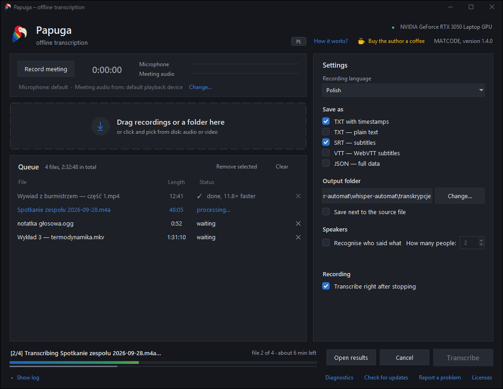

Turns recordings into text. On your own computer.
Papuga records meetings, recognises speech and labels who said what. It sends nothing to the cloud: after a one-time model download it works entirely offline.
Version 1.2.0 · Windows 10 and 11, 64-bit · free, MIT license · Polish and English
- AnnaAll right, let's start. Marek, how's the schedule?
- MarekPrototype on Thursday, tests on Friday morning.
- AnnaSo the demo for the board on Monday is realistic?
- MarekRealistic, if Kasia finishes the interface translation.
- KasiaI will. I just need the final list of screens.
- ✓ Done, 11.8× faster than the recording
Three steps
No account, no configuration, nothing to learn.
-
Drag in your recordings
Audio or video, single files or a whole folder. MP4, MKV, MOV, MP3, WAV, M4A and a dozen other formats.
-
Pick the text format
Text with timestamps, plain text, SRT or VTT subtitles for a video, JSON with the full data.
-
Click Transcribe
The finished files land in the output folder. With several recordings you can walk away from the computer; the app shows how much is left.
What it does
- Records meetings
- One button captures your microphone and the other people from Teams, Zoom or the browser into a single file, and transcribes it as soon as you stop.
- Tells who is speaking
- Splits a conversation into people. After the recording you listen to a sample of each voice and type a name, which goes into the text and the subtitles.
- Polish and ten other languages
- English, German, Ukrainian, Czech, Slovak, French, Spanish, Italian, Russian, or automatic detection.
- Picks the model for your computer
- With an NVIDIA card it runs a dozen times faster than the recording. Without one it works on the processor: slower, but just as accurate.
- Queue
- Drop in several recordings at once, remove from the queue while it works, see the remaining time.
- Keeps itself up to date
- Once a day it checks for a new version and installs only releases signed with the author's key.
What it looks like
Queue on the left, settings on the right, progress at the bottom. The bar in feather colours shows the current file. The interface follows your Windows language; the PL/EN button in the header switches it.

Privacy
Recordings of meetings, interviews and conversations are often things that shouldn't go to someone else's servers. Papuga doesn't send them.
- Everything runs locally
- Speech and voice recognition run on your processor or graphics card. Recordings and texts never leave the computer.
- Two connections, both in the open
- Once, on first start, it downloads the model from huggingface.co. Once a day it asks github.com for a new version, without login and without identifiers.
- Open source
- The code is public under the MIT license. Anyone can check what the app does and build it themselves.
- Signed releases
- An update is installed only when the release is signed with the author's key built into the app. A GitHub account alone is not enough.
Before you download
| System | Windows 10 or 11, 64-bit |
|---|---|
| Memory | 8 GB RAM |
| Disk space | about 4 GB: the app 1.1 GB and the model 1.6 GB, downloaded on first start |
| Graphics card | NVIDIA with driver 527 or newer speeds things up a dozen times. Not required. |
| Language | Polish or English, follows your Windows language; switch with the PL/EN button. Transcribes Polish, English and nine other languages |
Windows will warn you on first install (“Windows protected your PC”), because the installer has no paid publisher certificate. Click More info, then Run anyway. The installation needs no administrator rights and asks no questions.
A problem or an idea? Write on GitHub.